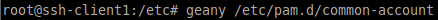

1. Instalando dependencias necesarias
La librería pam-ldap permite que las aplicaciones que utilizan PAM (Plu ggable Authentication Module) para autentificarse, puedan hacerlo mediante un servidor LDAP. Para que el sistema GNU/Linux se autentifique mediante un se rvidor LDAP es necesario instalar esta librería ya que utiliza PAM . Hay otras aplicaciones o servicios que utilizan PAM para la autentificación y por tanto podrían, gracias a la librería pam-ldap , autentificarse ante un servidor LDAP.
La librería nss-ldap permite que un servidor LDAP suplante a los archivos /etc/passwd , /etc/group y /etc/shadow como bases de datos del sistema. Posteriormente deb eremos configurar el archivo /etc/nsswitch.conf para que se utilice LDAP como base de datos del sistema en lugar de los archivos passwd , group y shadow .
Bien, nos vamos a nuestra máquina cliente e instalamos las dependencias necesarias para poder realizar la autenticación ldap y podamos utilizar nuestro servidor ldap (que realizamos en prácticas anteriores) como servidor de autentificación.
Procedemos a la instalación de los paquetes libpam-ldap.
Ahora, tras ejecutar el comando, nos aparece un asistente de configuración. Empezamos la configuración. Le indicamos la ruta de nuestro servidor ldap, además de su respectivo puerto que es el 389.
A continuación, especificamos la base del directorio LDAP.
Le indicamos la versión de LDAP que vamos a utilizar que es la 3.
En el siguiente paso, le Indicamos “Sí”, de forma que el usuario “root” podrá cambiar las contraseñas de los usuarios del directorio LDAP del mismo modo en que cambia las contraseñas de los usuarios locales.
Ahora, le añadimos que se pueda acceder al directorio ldap de forma anónima, por lo que no necesita loguearse.
A continuación, le indicamos la cuenta del administrador del ldap y su contraseña.
2. Configuración de las Librerías
El archivo de configuración de ambas librerías es /etc/ldap.conf y la contraseña del administrador del servidor LDAP se guarda como texto plano (sin encriptar) en el fichero /etc/ldap.secret.
2.1 Configurar el fichero ldap.conf
Vamos al archivo /etc/ldap.conf y activamos las siguientes opciones:
2.2 Configurar el fichero nsswitch.conf
Ahora, editamos el archivo etc/nsswitch.conf y añadimos exactamente en las líneas que hacen referencia a “passwd”, “group” y “shadow” como alternativa para autentificar usuarios en el ldap.
3. Configurar servicios PAM
Nuestro sistema ya estaría preparado para autentifi carse por LDAP. Editando los archivos que hay en el directorio /etc/pam.d , podemos configurar la forma en la que se autentifica cada uno de los servicios que requieren autentificación.
Para no tener que configurar cada uno de los servic ios, existen unos archivos comunes cuyo nombre empi eza por common que afectan a la mayoría de ellos y sus ficheros de con figuración referencian mediante una línea @include a los ficheros comunes, causando el mismo el efecto que si el contenido de los ficheros comunes estuviera copiado en el lugar de la línea @include . Los archivos comunes son:
- /etc/pam.d/common-auth (para autentificarse)
- /etc/pam.d/common-account (para disponer de una cuenta)
- /etc/pam.d/common-session (para poder iniciar sesion)
- (para poder cambiar password)
3.1 Configuración del archivo common-auth
Para que los servicios de nuestro sistema utilicen las librerías pam-ldap para autentificar al usuario, debemos añadir en el archivo /etc/pam.d/common-auth la siguiente línea, justo encima de la línea pam_unix.so :
3.2 Configuración del archivo common-account
Para permitir que los servicios de nuestro sistema comprueben la cuenta del usuario mediante las libre rías pam-ldap , debemos añadir en el archivo /etc/pam.d/common-account la siguiente línea justo encima de la línea pam_unix.so :
3.3 Configuración del archivo common-session
Para permitir que los servicios de nuestro sistema obtengan los parámetros de la sesión de usuario med iante las librerías pam- ldap , debemos añadir en el archivo /etc/pam.d/common-session la siguiente línea encima de la línea pam_unix.so :
También, al final del archivo, añadimos la siguiente línea:

3.4 Configuración del archivo common-password
Para permitir que los servicios de nuestro sistema puedan modificar la contraseña del usuario mediante las librerías pam-ldap , debemos añadir en el archivo /etc/pam.d/common-password la siguiente línea encima de la línea pam_unix.so :
4. Probar autentificación LDAP
A la hora de probar mediante los comandos "getent shadow" o "getent passwd" no obtengo los usuarios del ldap y a la hora de reiniciar el equipo, no termina de reiniciar, por lo que hay un fallo pero no se encuentra porque todo está igual que la práctica.